12.4. Registering and setting keyframes
12.4.1. Select a frame
This is the frame selection operation, which is the basic operation. There are two types of selection.
- Select frame number:
Select a frame position
- Select line in timeline:
Select timeline (role)
12.4.1.1. Select a frame position
Click on the frame number at the top of the timeline to select it.
If a keyframe has already been registered at that position, the settings will be restored to the UI and the object will be restored to that state.
If the keyframe is not registered, it will not be selected even if you click the keyframe part.
12.4.1.2. Select timeline (role)
Click on the role name on the left of the timeline to select it.
You can also select the timeline by selecting the object list.
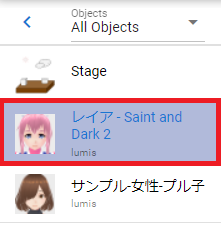However, only when the corresponding object is associated with a role
The settings for that object are restored to the UI.
12.4.1.3. If a keyframe has been registered
Clicking a point with a registered keyframe selects both the frame position and the timeline (roll).

When you hover your mouse cursor over a red cell, a popup will pop up and you can check the keyframe information.
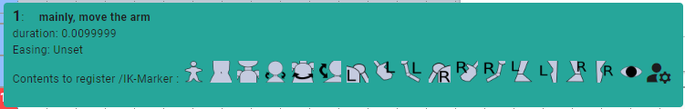Starting from the top line, the following is displayed.
Each display content |
|---|
[Frame number] Total duration up to the current keyframe / Total duration of all keyframes: Memo |
Duration: Duration from previous keyframe to current keyframe |
Easing: Type of easing when changing from previous keyframe to current keyframe |
Contents to be registered/IKMarker: Summary of IK markers and properties registered as motion among the current cast (object) |
Information on each interval (duration)
It is now displayed from ver 2.6.0.
Displays the total duration of the currently selected keyframe from the first keyframe. This allows you to check when the currently selected keyframe changes within the total number of seconds.
This will make it easier to match the timing with the motion of other objects.
12.4.2. Registering/updating to a keyframe
We will register keyframes on the timeline. The contents that can be registered in key frames are as follows.
- Contents that can be registered:
All operations of VRoid/VRM implemented in this application
All other object actions
Manipulate system effects and audio
FBX animation, effect animation
Note
Material management such as texture files is not included in animation. Please load each file corresponding to the material name used in each object in advance.
Animations of commonly used 3D objects such as FBX can be played individually in the animation project of this application.
From
ver 2.1.0, you can also register system effects and audio from the buttons in the keyframe registration window. (The registration button in each tab of the ribbon bar has been abolished.)
Is it possible to register keyframes for each bone (IK marker)?
From ver 2.1.0, it is now possible to check the bones to be registered (called IK markers in this application) on the UI. In the future, we plan to make it possible to register keyframes for each bone in the same way as MMD/MMM.
Starting with ver 2.11.0, it is now possible to register only the movement of a specific bone (IK marker) to a keyframe, like MMD. Parts other than the registered IK marker will inherit the movement of the last registered keyframe.
- Method of operation
Click the keyframe number on the VRoid/VRM timeline to pose.
Warning
Please note that if the keyframe has already been registered, that pose will be read and the current pose will be overwritten.
Pose the VRoid/VRM and each object.
Click
Register Keyframein theAnimationtab of the ribbon bar.
The
keyframe registration windowwill appear.
In the keyframe registration window, you can see what you are about to register and the bones.
VRM
Non-VRM


All IK markers including IKParent
IKParent only
Hint
You can display it by right-clicking anywhere in the ribbon bar (Control-click or double-tap on macOS).
Confirm that the target keyframe in the timeline is filled.
Note
Numbers are displayed for keyframes with common properties such as movement and rotation.
The number increases when a child key described later is registered.
Numbers are not displayed for keyframes that do not have common properties registered.
Select another keyframe, give it another pose and register again.

Repeat for the length of the animation you want to create.
- Right click to register
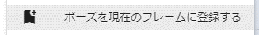 Right-clicking on the object list and clicking
Register Pose in Current Framehas the same function.
- Register keyframe button on the toolbar (Mobile display mode)
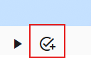 If you press this button, you can register immediately without displaying the keyframe registration window. It is just not displayed, but the IK marker of the
bone to registeris actually registered with a check mark, as shown below.IK marker registered in the previously selected keyframe
IK marker checked in the keyframe registration window
- Decide what to register
In
What to register, you can choose the following contents.Common (move)
only register the movement of the IK marker. The
positionof thecommontab in the property list.Register common (other than movement)
IK marker rotation, magnification, jump, and shake. It is the item with the same name on the
Commontab of the property list.Property
Register each property of the currently selected object. A non-common tab in the property list.
Up to
ver 2.0.3, all three types were forcibly registered.In
ver 2.1.0or later, for example, if you change the blend shape in the first frame and want to continue to reflect that blend shape, you can uncheck the property and register it in the second frame and later. , you can leave it all the way to a keyframe that changes the property again. You can only need to modify the blendshape on frame 1 and then change again.There is no point in turning on or off the check for system effects and audio.
- Check the IK marker to be registered
In
Bones to register, you can check the IK markers that are actually registered. Note that the number of IK markers that can be checked differs between VRM and other objects.Note
When you select a registered keyframe, only the IK markers registered to that keyframe will be checked until the next registered keyframe is selected.
However, if no keyframes have been registered for any of the selected objects, all IK markers will be checked.
- VRM:
 Property
Property IKParent
IKParent Head
Head EyeViewHandle
EyeViewHandle LookAt
LookAtChest
 Aim
Aim Pelvis
Pelvis LeftShoulder
LeftShoulder RightShoulder
RightShoulder LeftLowerArm
LeftLowerArm LeftHand
LeftHand RightLowerArm
RightLowerArm RightHand
RightHand LeftLowerLeg
LeftLowerLegLeftLeg
RightLowerLeg
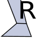 RightLeg
- Non-VRM:
- IKParent Property
In addition, it is also expressed so that the parts can be identified with icons. This icon is also used in the keyframe content popup on the timeline.
Starting with
ver 2.11.0, for VRM, it is now possible to register only specific bones (IK markers) shown above to keyframes.From the
Bone to Registercheckboxes, check only the IK markers you want to register.For information about the convenient selection buttons in the keyframe registration window, see Keyframe registration window. You can select only the gaze, only the upper body, etc.
What about the compensation between keyframes?
Due to the effects of the library used by this application, the animation between registered keyframes is automatically corrected. (Some motions cannot be fully corrected)
When you click on a frame number that has nothing registered, if it is between the registered keyframes, the pose in the middle of the animation will be reproduced. This will change depending on the easing and spacing described later.
12.4.3. Delete keyframe
The registered keyframes on the timeline are deleted.
Click to select the object you want to delete and the keyframe number.
Click
Remove Keyframein theAnimationtab of the ribbon bar.
Select and click the deletion method.
Delete keyframe
deletes the keyframe itself as usual.
Delete only properties
deletes each property of
non-commonobjects from the contents registered in the keyframe. Keyframes are not deleted.Delete only VRMAnimation
It only deletes the temporary data for the VRMAnimation. When you select a keyframe, the temporary data will be generated again.
A confirmation message will be displayed. If there is no problem, press the OK button.
12.4.4. Change the registered keyframe position
You can move the frame position of the registered keyframe.
Register a keyframe.
Double-click the registered keyframe part.
Make sure that the frame number is correctly selected for the keyframe at this time.
Enter the new position value in the input box of the destination frame and press the button with the move icon.

Note
If you change it, the display of keyframes on the timeline will also change immediately.
If a keyframe has already been registered at the frame position of the change destination, the button cannot be pressed.
Hint
By specifying the start frame and end frame in a specific range, you can move multiple keyframes at once.
- Example:
- Positions where keyframes exist = 10, 13, 14Current start frame = 10Current end frame = 15Destination frame = 20After moving = 20, 23, 24
12.4.5. Manipulating multiple keyframes at once
Starting with version 2.11.0, you can now not only move keyframes, but also duplicate and delete multiple keyframes at the same time.
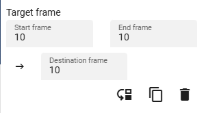- 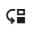:
Moves the start frame to the end frame to the destination frame.
- 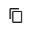:
Duplicate the start frame to the end frame to the destination frame.
- :
Remove the start frame to the end frame.
Caution
If the destination frame is between the start and end frames, the Move and Duplicate buttons will be disabled.
In the case of deletion, the destination frame is not used.
12.4.6. Modifiable properties
The properties that can be changed in the keyframe settings dialog are as follows. Any property can be changed many times at once by targeting multiple keyframes. I think there are many ways to use it.
If you hover the mouse cursor over the registered key position, a popup will appear and you can check the interval and easing at that position.
12.4.6.1. write notes
This can be set after registering the keyframe. It does not affect actual movement or properties. You can make a note of what movement will occur at that key frame.
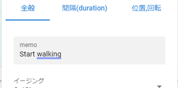Register a keyframe.
Double-click the registered keyframe part to open the keyframe window.
Open the General tab.
Enter the details of the motion in the memo input box.
12.4.6.2. Set easing
It can be set after registering the keyframe. If you’re familiar with animation, you may already know this, but it’s a factor that affects how things move, such as how long it takes to change to a certain keyframe, and how fast it moves. Changing this will change the animation from a monotonous impression to a lively one.
Register a keyframe.
Double-click the registered keyframe part to open the keyframe window.
Make sure that the frame number is correctly selected for the keyframe at this time.
Open the General tab.
Select the type of easing you like from the easing combo box.
Hint
By specifying the start frame and end frame, you can change the easing settings for multiple keyframes at once.
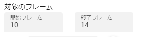For easing, refer to the following site.
Note
From VRMViewMeister ver 2.2.0, the range where the same easing is continuously specified will be animated according to that easing.
12.4.6.3. Set the keyframe color
This can be set after registering a keyframe. It has no direct effect on the animation itself, but it can change the color of the keyframe.
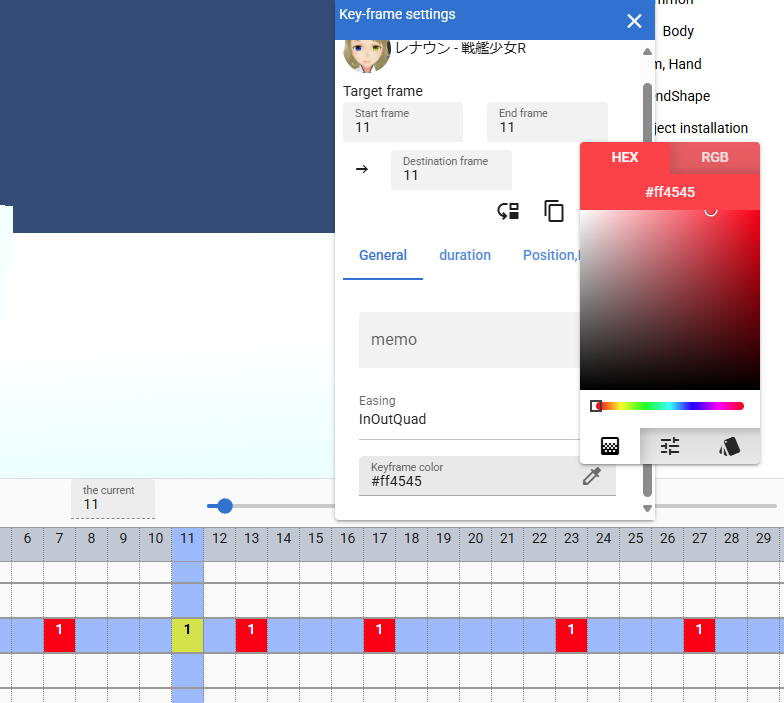Register a keyframe.
Double-click the registered keyframe part to open the keyframe window.
Open the General tab.
Select any color from the keyframe colors.
Notice that the currently selected keyframe has changed color.
If you change the color of certain motions, it will be easier to understand when looking at the timeline later.
12.4.6.4. Set keyframe intervals
It can be set after registering the keyframe. Sets the time to reach the corresponding keyframe. Basically it is calculated automatically, but you can also specify it manually.
デフォルトの間隔(duration)・・・ [FPS / 6000] 秒
Register a keyframe.
Double-click the registered keyframe part to open the keyframe window.
Make sure that the frame number is correctly selected for the keyframe at this time.
Open the duration tab.
Specify the interval (duration) field in seconds.
With this, you can create motion at any time for each timeline (roll) without registering keyframes according to the actual frame numbers.
Caution
However, if you do not properly manage the duration yourself, it may be difficult to determine the motion timing for each timeline and cause confusion. please note.
Hint
By specifying the start frame and end frame, you can change the settings for multiple keyframe intervals at once.
12.4.6.5. Copy intervals from another avatar’s timeline
You can easily obtain the total interval from a specific range of keyframes on other timelines.
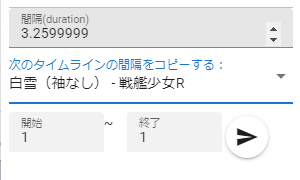
Select the timeline (role name) you want to copy.
Enter the
startandendframe numbers.When you press the copy button, the total value of the interval in the specified range will be reflected in the duration input box.
If you really want to apply it, use the ** key to erase fractions in the duration input box. The changes will be confirmed** .
Note
When you press the copy button, the total value of the interval is set in the input box.
If you want to cancel the input, please do not press keys in the input box and switch the selection of the timeline. Doing so cancels the changes and allows you to move on to another timeline or avatar editing.
12.4.6.6. Change position or rotation
It can be set after registering the keyframe. If the selected avatar is VRM, OtherObject, Camera, Light, or Effect, you can adjust the position and rotation of the object itself.
Fill in the input fields for the X, Y and Z axes of position or rotation.
By default, changes are applied to target keyframes with relative position and relative angle.
Click the Apply button at the bottom right.
- Position:
Moves the object plus or minus from its current position. If 0, do not change.
- Rotation:
Rotate the object plus or minus from the current angle. Possible values are in the range -180 to +180 degrees. If 0, do not change.
Note
If you check absolute specification, you can specify absolute.However, it can easily overwrite the position and rotation in existing keyframes, so be careful when targeting multiple keyframes.
Hint
By specifying the start frame and end frame, you can change the position and rotation of objects in multiple keyframes at once.
12.4.7. Insert an empty frame at the current position
Inserts an empty frame at the currently selected frame number and shifts all frames to the right by one.
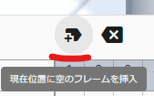Press the button for this icon.
Then, all frames to the right, including the currently selected frame position, will shift to the right by one, and the maximum number of frames will increase by one.
12.4.8. Delete current frame position
Deletes the currently selected frame position.
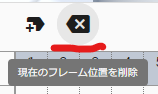Press the button for this icon.
The currently selected frame position is deleted, all right frames are shifted left by one, and the maximum number of frames is reduced by one.
Warning
If keyframes have been registered on each timeline at the target frame position, those keyframes will also be deleted.
12.4.9. Cut/copy/paste keyframes
You can copy, cut, paste, and move registered keyframes.
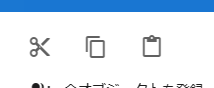Press these buttons on the
Animationtab of the ribbon bar.
Copy and Paste
Press the Copy button.
Select any frame number and press the Paste button.
Cut and Paste
Press the cut button.
Select any frame number and press the Paste button.
Note
In either case, if pasted to a frame that already has a keyframe registered, the contents will be overwritten.
Caution
The destination timeline (role) must be the same.
Even if the object type is the same, it cannot be pasted if the roles are different.
12.4.10. Child key function
Deprecated in ver 2.2.0. All motions now move smoothly by setting easing continuously. The child key function has been abolished as the original purpose has been achieved.